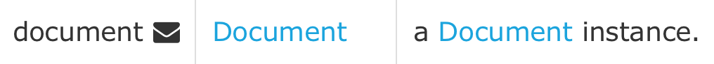
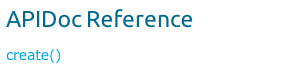
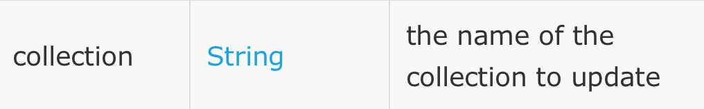

Creating Connector Documentation
This document describes how to write Javadoc comments in your connector code and generate readable documentation for your connector users.
Introduction
After you build your connector, document its functionality to help customers use it effectively and reduce customer support and training costs.
Connector documentation usually consists of:
-
Reference documentation (created by DevKit APIdoc; see Generating Documentation)
-
README
-
Release notes
-
User guide including use cases - for examples see Documenting with Use Cases
| Mule builds on Javadoc to automate and simplify the creation of technical reference documentation for your connector, by adding a custom Javadoc Doclet and some DevKit-specific Java annotations. |
Prerequisites
This document assumes you are familiar with Anypoint Studio and Javadoc. It also assumes that you have already developed and tested your connectors.
Tags for Generating Documentation
The following sections describe the Javadoc tags and syntax that can be used to generate the documentation for your connector built using Anypoint DevKit.
Supported Javadoc Tags
The DevKit-supported Javadoc tags are described in this table and are used in examples throughout this document.
| Tag | Description | Example |
|---|---|---|
|
Provides an inline link pointing to the documentation for the specified package if the fully qualified name is provided, otherwise the text after link is parsed as a string. Format: |

|
|
Provides an in-line link to a URL, for example to a page where a related class or method is described |
If you want URLs inside your Javadoc comments to be parsed as hyperlinks, you can use the Javadoc tag |
|
Adds a new section to the documentation intended to provide a link to a service API’s documentation. You have the option whether or not to use html after the tag |

|
|
Can be used on the connector class, for example, |
See Annotation for Non-Java Data Types for the code comment snippet. |
|
Used underneath the description of a method. |

|
|
Adds the description of the function’s return type to the "Returns" section of the documentation. |
|
For visual reference, have a look at the DevKit 3.8.0 generated documentation for one of the Salesforce connector’s operations:
| Documentation is not mandatory, however, unless you disable the Javadoc Check, errors display. To disable Javadoc Check and show errors as warnings, right-click your project, and click Anypoint Connector > Disable Javadoc check. |
@Connector and @Author Metadata
Each class annotated with @Connector should have a class-level Javadoc comment with a high-level overview of the extensions. This may also include the @author annotation.
/**
* CMIS (Content Management Interoperability Services) is a standard for improving interoperability between ECM systems.
*
* @author MuleSoft, Inc.
*/
@ReconnectOn(exceptions = CMISConnectorConnectionException.class)
@Connector(name = "cmis", schemaVersion = "1.1", friendlyName = "CMIS")
public class CMISConnector implements CMISFacade {
...Documenting @Configurable Attributes
@Configurable attributes of your connector can be documented with a Javadoc comment that briefly explains the attribute.
/**
* The username to access the service
*/
@Configurable
private String username;
/**
* The password to access the service
*/
@Configurable
private String password;
/**
* The API endpoint;
*/
@Configurable
private String apiEndpoint;The @Default annotation puts the value between parentheses under the "Default Value" column in the row corresponding to the attribute. The default value for host is localhost:27017 in this example:
/**
* A list of MongoDB instances, with the format <code>host:port</code>, separated by commas.
*
* <pre>
* Example: 127.0.0.1:27017, 192.168.1.2:27017
* </pre>
*
*/
@Configurable
@Default("localhost:27017")
@FriendlyName("Servers (host:port)")
@Placement(group = "Connection")
private String host;The above comments populate the attribute table like so:
Documenting Connection Strategies
With version 3.8.0 of DevKit, it is possible to generate documentation for as many connection strategies as are supported by the connector, and will appear under the Configs heading:
Documenting @Processor Methods and Parameters
Each method annotated with @Processor or @Source (for streaming APIs) should have a Javadoc comment that includes the following:
-
A description of the use of the method
-
For each parameter of the method, a Javadoc
@paramtag, with a description of the parameter -
If the method has a return type other than
void, a Javadoc@returntag with a description of the return value
See this code sample, which includes examples of the above:
/**
* Inserts a document into a collection, setting its ID if necessary.
*
*
* @param collection
* the name of the collection where the given document should be inserted.
* @param document
* a {@link Document} instance.
* @return the id that was just inserted
*/
@Processor
public String insertDocument(final String collection, @RefOnly @Default("#[payload]") final Document document) {
Validate.notNull(collection);
Validate.notNull(document);
return config.getClient().insertObject(collection, document);
}Linking to External Javadoc Resources
To support linking from your documentation to a third-party Javadoc resource, reference the URL once by annotating the connector class with the Javadoc tag @javadoc.url.
Use the format @javadoc.url package.name[https://javadocurl/]; as in this example:
/**
*
* @author MuleSoft
* @javadoc.url org.bson[https://api.mongodb.org/java/3.1/];
* @javadoc.url com.mongodb[https://api.mongodb.org/java/3.1/];
*/
public class MongoCloudConnector {
...Using @link for External Javadoc
Once the @javadoc.url tag is in place and you confirm the package and URL are specified using the proper syntax, you use the @link tag as desired, to create functioning links from within your comments.
The fully qualified name of the class must be specified after @link to create a functioning URL, for example, {@link org.bson.Document}. Otherwise, the package for the datatype in question will not be found.
|
/**
* Inserts a document in a collection, setting its ID if necessary.
* @see <a href="http://example.com">http://example.com</a>
*
* @param collection
* the name of the collection where to insert the given document.
* @param document
* a {@link org.bson.Document} instance.
* @return the id that was just inserted
*/
@Processor
public String insertDocument(final String collection, @RefOnly @Default("#[payload]") final Document document) {
...DevKit concatenates the base URL for the MongoDB Java API, the path to the particular package, and the specific class to form a proper URL.
Clicking Document from the documentation shown above would direct the user to the reference material for this class: https://api.mongodb.org/java/3.1/org/bson/Document.html.
XML Code Samples File
The examples file must be stored in the /doc folder and adhere to this structure:
<!-- BEGIN_INCLUDE(myconnector:method-a) -->
// example here
<!-- END_INCLUDE(myconnector:method-a) -->
<!-- BEGIN_INCLUDE(myconnector:method-b) -->
// example here
<!-- END_INCLUDE(myconnector:method-b) -->
...Here is an example from the CMIS connector’s xml.sample file:
<!-- BEGIN_INCLUDE(cmis:getObjectByPath) -->
<cmis:get-object-by-path path="/mule-cloud-connector" config-ref="config" />
<!-- END_INCLUDE(cmis:getObjectByPath) -->
DevKit APIDoc can generate more than one example from the xml.sample file for the same connector operation. Of course, the example must follow the same "_INCLUDE" tag structure above. As of DevKit 3.8.0, the @sample.xml tag is NOT supported.
|
Generating Documentation
Documentation can be previewed by right-clicking your project in the Package Explorer, then selecting Anypoint Connector > Preview Documentation.
| You must have DevKit 3.8.0 and have JDK 7 or higher enabled to access the updated documentation features described here. Ensure the appropriate version of DevKit is referenced in the pom.xml file, and likewise for the JDK used by the system. |
When you generate documentation for your connector (Project > Generate Javadoc), DevKit automatically creates both an HTML file and an AsciiDoc file that serve as a user-friendly reference for the Javadoc comments you have added within your code explaining connector methods and attributes.
Using a Maven Command
Alternatively, you can navigate to the connector’s root directory and execute the following Maven command to generate the documentation:
mvn clean compile -DgenerateApidocs
The generated documentation should have been created in a new target/apidocs directory in your connector folder. Open the file connectorname-apidoc.html to show the fully generated documentation in the browser.
Contextual Help in Studio
The same Javadoc comments are also consumed by DevKit to provide contextual help for the user within Studio at design time, as shown here:
As you build out your connector, perform a review of the generated documentation to ensure that the contents are sane and correct. If you find it lacking, you can always include more detail in the Javadoc comments in your code and regenerate the documentation.
See Also
After you add all required operations to your connector and develop tests, move on to Packaging Your Connector For Release.